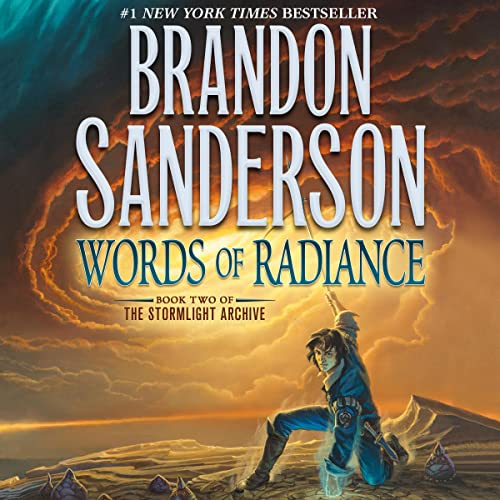
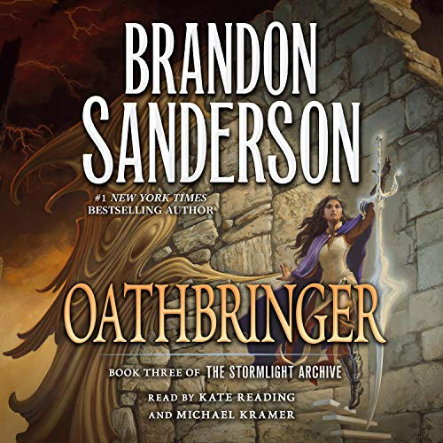
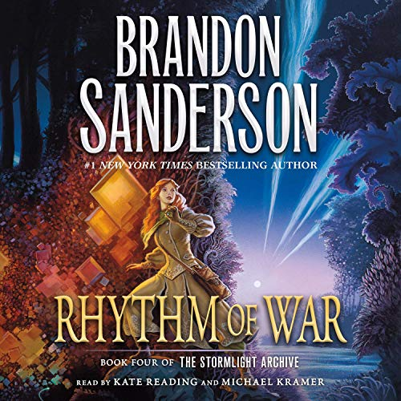

For updates on everything Stormlight Archives for TV and film, this is just the place to be!

The Stormlight Archive has for a long time been seen as far too large and ambitious to ever leave the pages, however with how far TV has come, and with better and better technology, it might finally be possible. In a livestream this year, Brandon Sanderson teased that Hollywood has offered him some hefty budgets for a potential series, which means hopefuly we will be able to see Roshar in all it's glory sometime in the near future.
Stormlight Archive TV Show Update
| Date released | Title | US Cover |
|---|---|---|
| 2010 | The Way of Kings |

|
| 2014 | Words of Radiance |  |
| 2017 | Oathbringer |  |
| 2020 | Rhythm of War |  |